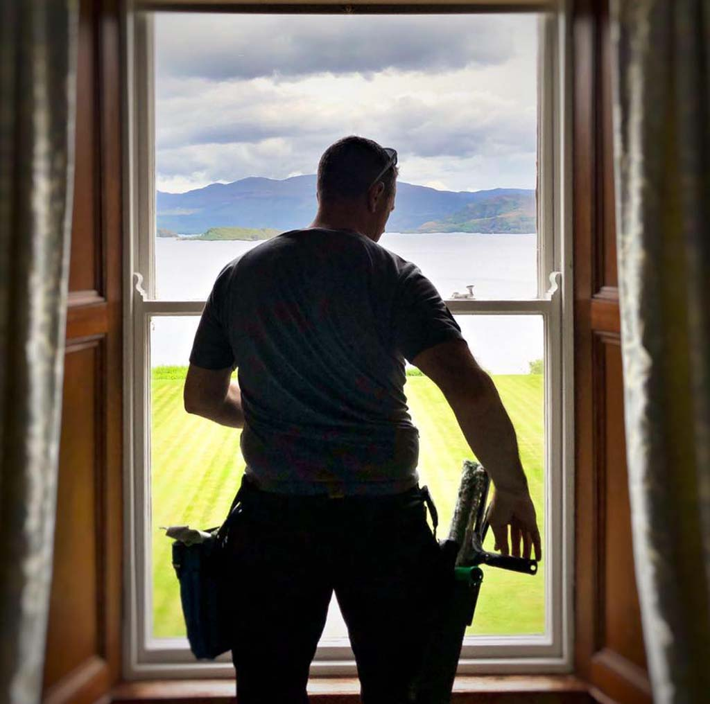

Services
Window Cleaning
Commercial & residential, inside & outside — up to 4 storeys high, all from the safety of the ground using the latest industry-leading techniques. With over 30 years' experience, your glass is in safe hands, once-off or on a regular clean.
Office Cleaning
A clean, tidy and sanitised area to work in is very important, and we aim to please. We complete daily or weekly cleans of your office environment so you and your team can do your best work.
Gutters Emptied
We empty your gutters from the safety of the ground using the latest advances in equipment and technology. We inspect each gutter before and after and can provide a free video report if requested.
Powerwashing
Using high pressure without chemicals, we can clean any property. Spring cleans, after-tenancy cleans, or just a regular maintenance clean — we have the know-how and equipment to get your property clean.

About Us
We're a small family business based in the beautiful county of Kerry.
Our services include window cleaning, office cleaning, powerwashing and gutter cleaning.
We've been around in Killarney since 1996, but have over 30 years' experience in the cleaning industry.
Using industry-leading techniques along with the latest technology and equipment helps us keep your property clean.
Advice
We also offer advice on all sorts of cleaning needs. From getting stains out of a carpet to cleaning your own windows, we'll always try to help you out.
Trust Us?
Being trustworthy and honest lets us provide a first-class service and peace of mind. We hold keys and alarm codes to most of our clients' properties in confidence.
Photo Gallery
Our Team
This is our ugly mugs!
Tim
Chief Dosser & coffee consumerDaragh
The actual workerFrequently Asked Questions
How much do you charge?
Loads. But we will work with you and your budget, so give us a call and find out how we can help you today!
Will you scratch my new glass?
We will NOT. We use industry-leading equipment that ensures clean glass without any damage. With many new options on glass effects and finishes we stay up to date with how to keep it clean. If you have specific requirements, we'll work with you on the best options too.
Do you clean the window frames?
We clean outside frames included in the price! Inside frames get a wipe down as we go, but we also offer a complete frame restoration service. Give us a call for more info.
Will you clean the windows after my builder?
No! But we are happy to recommend other cleaners who specialise in this type of post-construction cleaning.
Contact Us
Opens a chat with 087 222 4117 — tell us what needs cleaning and we'll come back with a price.